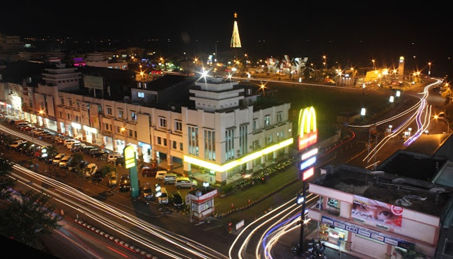
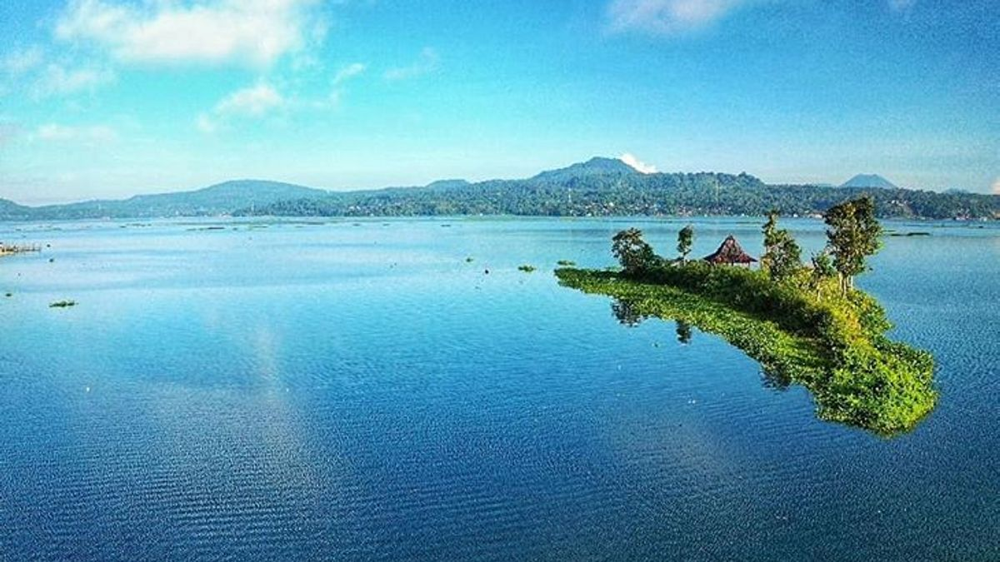
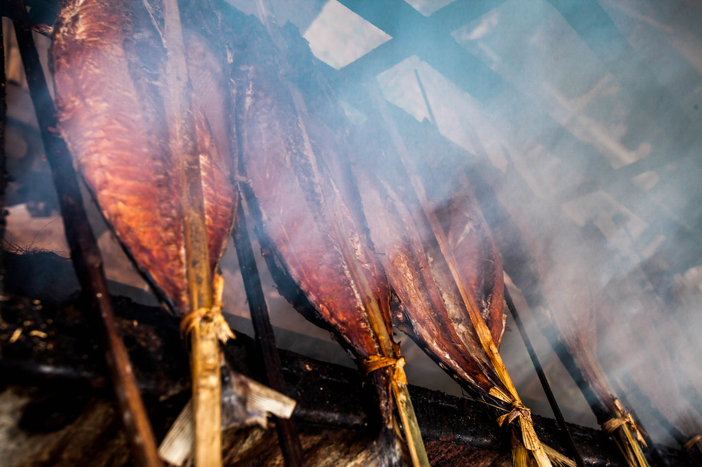
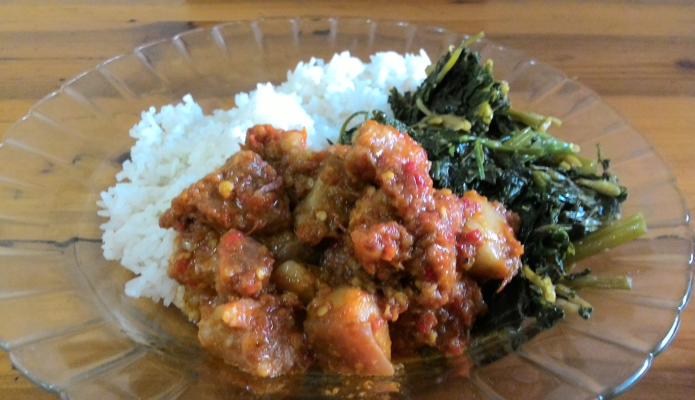
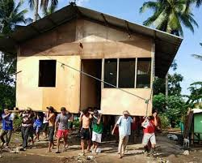
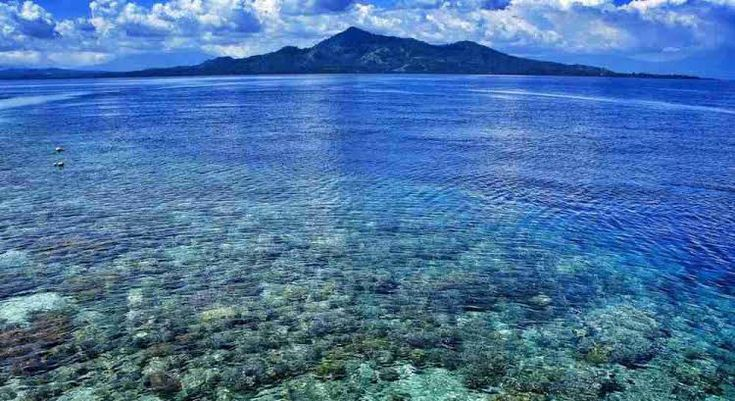
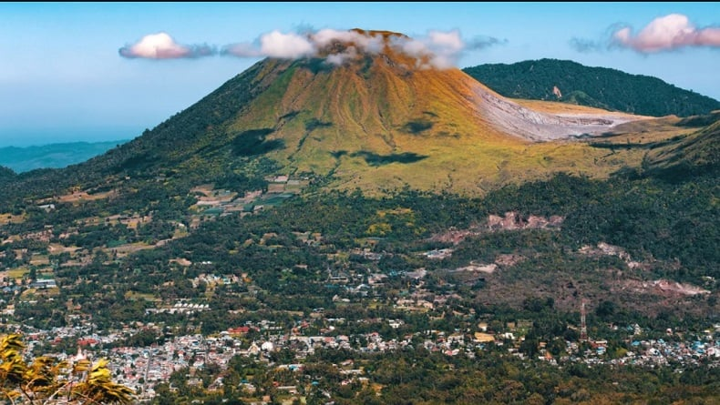

Sulawesi Utara · Indonesia
The Beauty of
MANADO
Kota Manado
Pesona Kota Manado di Sulawesi Utara
Scroll
Kota Manado
Pesona Kota Manado di Sulawesi Utara
Selamat datang di Kota Manado, ibu kota Provinsi Sulawesi Utara yang penuh pesona dan keunikan. Kota ini terletak di pesisir Teluk Manado dan dikelilingi oleh pegunungan serta laut yang indah, menciptakan kombinasi alam yang sangat memukau.
Selain terkenal dengan Taman Nasional Bunaken yang mendunia, Manado juga memiliki sejarah panjang sebagai kota pelabuhan penting sejak masa kolonial, tempat pertemuan budaya Minahasa, Tionghoa, dan Eropa.
Manado menawarkan pengalaman wisata yang lengkap dan tak terlupakan. Anda dapat menikmati keindahan bawah laut Bunaken yang memiliki lebih dari 390 spesies terumbu karang dan ribuan jenis ikan tropis.
Tidak hanya alam, Manado juga terkenal dengan kulinernya yang kaya rasa, seperti Tinutuan, Cakalang Fufu, dan berbagai masakan pedas khas Minahasa yang tak terlupakan.
Lokasi Kota Manado di Sulawesi Utara, Indonesia
Kota Manado memiliki keindahan alam yang luar biasa, dari pantai dan laut yang menakjubkan hingga pegunungan yang hijau. Keunikan budaya Minahasa masih tetap lestari hingga kini.


Manado terkenal dengan keindahan bawah lautnya yang spektakuler, terutama di Taman Nasional Bunaken yang merupakan salah satu destinasi diving terbaik di dunia dengan keanekaragaman hayati laut yang luar biasa.
Nama "Manado" dipercaya berasal dari kata "Manaró" atau "Manadou" yang berarti "di tepi" atau "di pesisir", menggambarkan lokasi kota yang berada di pesisir pantai Teluk Manado.

:strip_icc():format(webp)/kly-media-production/medias/4841919/original/002398600_1716560987-WhatsApp_Image_2024-05-24_at_21.10.49.jpeg)
Manado memiliki budaya Minahasa yang kaya dan unik, termasuk tradisi Mapalus (gotong royong), tarian Kabasaran, dan musik Kolintang yang khas. Masyarakat Manado juga dikenal sangat religius dengan toleransi beragama yang tinggi.
.jpg)
Tinutuan atau Bubur Manado adalah makanan khas yang terbuat dari campuran berbagai sayuran seperti kangkung, bayam, labu kuning, dan jagung. Bubur ini biasanya disajikan dengan ikan asin dan sambal roa sebagai pelengkap, sangat cocok untuk sarapan pagi.

Cakalang Fufu adalah ikan cakalang yang diasap dengan cara tradisional menggunakan kayu bakau. Ikan ini memiliki tekstur yang padat dan rasa yang gurih. Cakalang Fufu biasanya diolah menjadi berbagai masakan seperti rica-rica atau dabu-dabu.

Rica-Rica adalah masakan pedas khas Manado yang menggunakan bumbu cabai rawit merah yang banyak. Rica-rica bisa dibuat dari berbagai bahan seperti ayam, ikan, atau cumi. Cita rasanya yang pedas dan gurih membuatnya menjadi favorit banyak orang.
Brenebon adalah sup kacang merah khas Manado yang dimasak dengan daging sapi atau babi, disajikan dengan bumbu yang kaya rempah. Hidangan ini memiliki cita rasa yang gurih dan sedikit manis, sangat menghangatkan dan cocok dinikmati bersama nasi putih.

Es Kacang Merah adalah minuman segar khas Manado yang terbuat dari kacang merah yang direbus dengan gula, kemudian disajikan dengan es serut, susu kental manis, dan sirup. Minuman ini sangat populer sebagai pelepas dahaga di cuaca yang panas.

Cap Tikus adalah minuman beralkohol tradisional khas Minahasa yang dibuat dari aren atau kelapa yang difermentasi dan disuling. Minuman ini memiliki kadar alkohol yang tinggi dan biasanya dikonsumsi pada acara-acara adat atau perayaan tradisional.

Tari Kabasaran adalah tarian perang tradisional Minahasa yang menggambarkan keberanian dan semangat juang. Penari menggunakan kostum dengan warna merah dan hitam, serta membawa senjata tradisional.
Kolintang adalah alat musik tradisional khas Minahasa yang terbuat dari kayu. Alat musik ini dimainkan dengan cara dipukul menggunakan stik khusus dan menghasilkan nada yang merdu dan khas.

Mapalus adalah tradisi gotong royong masyarakat Minahasa yang masih dilestarikan hingga kini, mencerminkan semangat kebersamaan dalam berbagai kegiatan seperti bercocok tanam dan membangun rumah.

Suku Minahasa adalah suku asli Manado dan merupakan kelompok etnis terbesar di wilayah ini. Mereka dikenal dengan budaya Mapalus, musik Kolintang, dan Tari Kabasaran.

Suku Sangihe berasal dari Kepulauan Sangihe dan banyak tinggal di Manado. Mereka memiliki budaya maritim yang kuat dan terkenal dengan tarian tradisional seperti Tari Gunde.
Suku Bolaang Mongondow berasal dari wilayah Bolaang Mongondow dengan bahasa, pakaian adat, dan tradisi yang unik, menambah keberagaman budaya Kota Manado.
Suku Minahasa tidak memiliki sistem kasta seperti banyak suku lain di dunia. Semua orang dianggap setara, dan keputusan penting biasanya dibuat bersama melalui musyawarah.
Taman Nasional Bunaken adalah salah satu taman laut pertama yang ditetapkan di Indonesia (1991) dan diakui sebagai salah satu pusat keanekaragaman hayati laut tertinggi di dunia, dengan lebih dari 390 spesies terumbu karang — mewakili 70% dari seluruh spesies karang di Indo-Pasifik.
Kolintang, alat musik tradisional Minahasa, telah resmi diakui oleh UNESCO sebagai Warisan Budaya Takbenda. Uniknya, satu ansambel Kolintang terdiri dari berbagai ukuran instrumen yang masing-masing menghasilkan nada berbeda, mirip seperti orkestra mini yang seluruhnya terbuat dari kayu lokal.

Taman Nasional Bunaken adalah surga bagi para penyelam dengan keindahan terumbu karang dan keanekaragaman hayati laut yang luar biasa. Dengan visibility air yang jernih hingga 35–40 meter, Bunaken menawarkan pengalaman diving dan snorkeling yang tak terlupakan.

Pulau Siladen adalah pulau kecil yang terletak di kawasan Taman Nasional Bunaken. Pulau ini menawarkan pantai berpasir putih yang indah dan air laut yang jernih, tempat yang sempurna untuk bersantai dan snorkeling.
Danau Tondano adalah danau vulkanik terbesar di Sulawesi Utara dengan pemandangan yang menakjubkan. Dikelilingi oleh pegunungan hijau, danau ini menawarkan suasana yang sejuk dan tenang.

Bukit Doa Mahawu atau Bukit Kasih adalah kompleks tempat ibadah unik di Tomohon. Di sini terdapat berbagai rumah ibadah dari lima agama, melambangkan toleransi dan kerukunan beragama di Indonesia.

Gunung Lokon adalah gunung berapi aktif yang terletak di Tomohon. Meskipun masih aktif, pendakian ke gunung ini menawarkan pemandangan kawah yang mempesona dan panorama alam sekitar yang luar biasa indah.